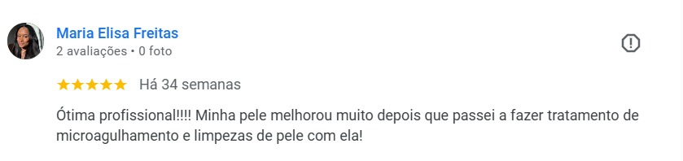

Limpeza de Pele Profunda em São Paulo
Remova cravos, controle a oleosidade e devolva o aspecto saudável da sua pele com atendimento profissional, técnico e totalmente personalizado.
- Remoção de cravos e impurezas profundas sem agressão
- Controle eficaz da oleosidade e prevenção da acne
- Pele visivelmente mais limpa, uniforme e saudável
Para quem a limpeza de pele é ideal?
Identifique as necessidades da sua pele e entenda como podemos tratá-las de forma segura.
Pessoas com grande incidência de cravos e oleosidade excessiva.
Quem sofre com poros dilatados, obstruídos ou quadros constantes de acne.
Quem sente a pele pesada, opaca, desidratada ou totalmente sem viço.
Quem já realizou procedimentos tradicionais e não obteve um resultado duradouro.
Resultados Reais de Limpeza de Pele
Transformações visíveis de clientes que passaram pelo nosso protocolo facial personalizado.


O que nossas clientes dizem
Resultados reais construídos através de atendimentos técnicos e individualizados.

Maria Elisa Freitas
Por que fazer limpeza de pele?
Entenda os benefícios de manter a manutenção de cuidados essenciais para a saúde tecidual.
Extração Segura
Remove cravos e impurezas acumuladas nos poros, prevenindo infecções cutâneas de forma estéril e sem marcas.
Equilíbrio Térmico
Diminui a oleosidade excessiva e estabiliza o brilho indesejado, ajudando a combater inflamações e acne.
Textura Suave
Acelera a eliminação de células mortas, promovendo uma melhora nítida na maciez e na uniformidade da pele.
Permeação de Ativos
Desobstrui as vias de absorção cutânea, preparando a pele para aproveitar melhor seus dermocosméticos de uso diário.
O que torna meu atendimento diferente?
Nossa filosofia é pautada no respeito à biologia cutânea e conforto da paciente.
Produtos Premium: Uso estrito de dermocosméticos de alta qualidade e com ativos cientificamente embasados.
Mais Conforto: Equipamentos avançados para diminuir sensivelmente o desconforto na extração física de cravos.
Tecnologia LED: Uso complementar de Ledterapia para acalmar a pele, reduzir a vermelhidão e diminuir bactérias da acne.
Sem Pressa: Atendimento com duração generosa de 1h30 a 2h, garantindo a extração minuciosa de cada cravo e milium.
Protocolo Único: Análise individualizada prévia para determinar o nível de sensibilidade e necessidades da pele.
Pós-Tratamento: Orientação completa e realista de skincare personalizado para você cuidar da sua pele em casa.
Nossos Protocolos Faciais
Além da limpeza de pele, oferecemos abordagens específicas para o rejuvenescimento e revitalização.
Massagem Facial
Técnicas manuais para estimular a circulação sanguínea e linfática, aliviar tensões musculares, reduzir inchaços e linhas de expressão, deixando o rosto descansado e iluminado.
Limpeza de Pele
Tratamento essencial e profundo para remoção de cravos e miliuns, controle de oleosidade e reequilíbrio da saúde da pele, sem causar marcas ou agressões excessivas.
Peeling
Aplicação de agentes físicos ou químicos que promovem uma renovação celular e descamação controlada, auxiliando na redução de manchas, acne ativa, poros dilatados e textura irregular.
Revitalização Facial
Hidratação intensiva e infusão de ativos antioxidantes que combatem o cansaço e envelhecimento precoce, devolvendo instantaneamente o brilho saudável e a elasticidade.
Revitalização Labial
Foco na hidratação e retexturização dos lábios, suavizando linhas e rachaduras. Ideal para lábios ressecados que perderam viço ou volume de hidratação.
Microagulhamento
Estímulo induzido de colágeno e elastina através de microagulhas. Excelente para o gerenciamento de cicatrizes de acne, manchas, linhas profundas e poros dilatados.
Spa Facial Relaxante
A união perfeita de limpeza leve, hidratação profunda com máscaras exclusivas e massagem facial relaxante, promovendo bem-estar, melhora tecidual e alívio do estresse físico.
Nutrição Profunda
Reposição lipídica e vitamínica intensa para peles sensíveis, ressecadas ou severamente desvitalizadas, fortalecendo a barreira de proteção tecidual.
Ledterapia
Uso de espectros de luz específicos para modular a pele: o LED azul age contra a bactéria da acne, e o vermelho reduz processos inflamatórios e estimula o colágeno.
Drenagem Linfática Facial
Estímulo manual para drenar toxinas e fluidos acumulados no rosto. Reduz o inchaço pós-sono ou retenção, acelerando a circulação local.
Pós-Operatório Facial
Cuidados estéticos complementares voltados para a cicatrização pós-cirúrgica, prevenindo fibroses, diminuindo edemas e acelerando o processo de recuperação.

Conheça a especialista por trás dos resultados
Tatiane Gomes é especialista em estética facial com foco em tratamentos personalizados para a saúde, bem-estar e equilíbrio funcional da pele.
Seu atendimento vai muito além de uma limpeza de pele comum. Cada paciente é avaliada de forma individual, respeitando seu tipo de pele, nível de sensibilidade a dor e necessidades específicas do momento.
Seu método exclusivo une técnica científica de ponta, cuidado humanizado e estratégia — garantindo uma limpeza profunda sem marcas ou agressões desnecessárias, controle da oleosidade e uma melhora real e duradoura na textura tecidual.
Ao longo de mais de 7 anos de experiência clínica, Tatiane já ajudou centenas de mulheres a recuperarem a confiança na própria pele através de resultados perfeitamente naturais e saudáveis.
Atendimento integrado e em constante atualização
Atualmente cursando Nutrição, Tatiane desenvolveu uma visão integral, combinando a nutrição clínica à cosmetologia avançada para tratar as queixas de dentro para fora, garantindo resultados ainda mais potentes.
Agende sua limpeza de pele
Atendimento exclusivo em São Paulo com protocolo sob medida para sua pele. Atendimentos com vagas limitadas para garantir toda a atenção e dedicação que sua pele precisa.